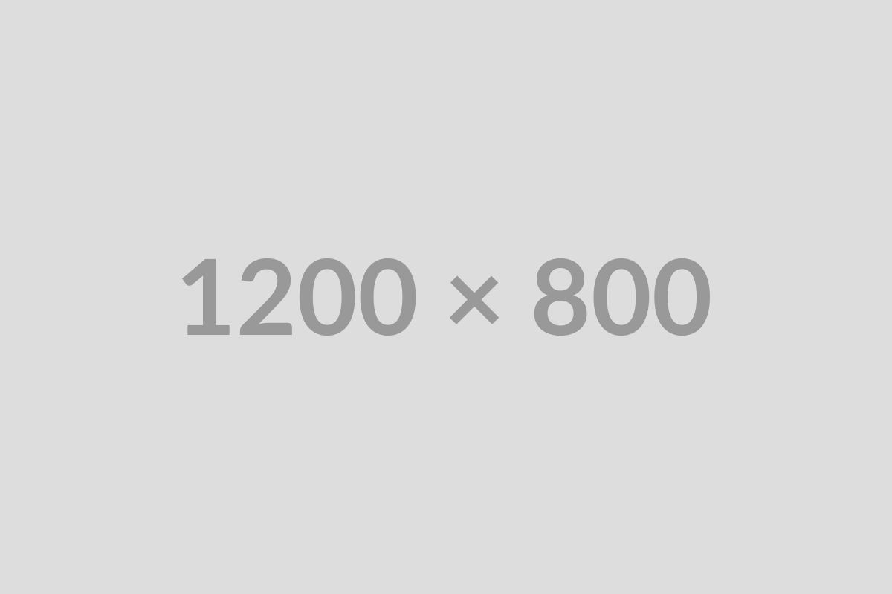
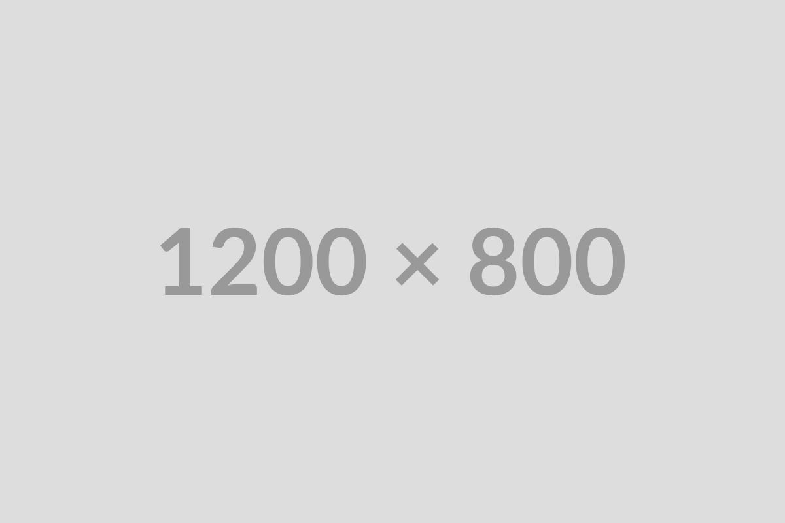
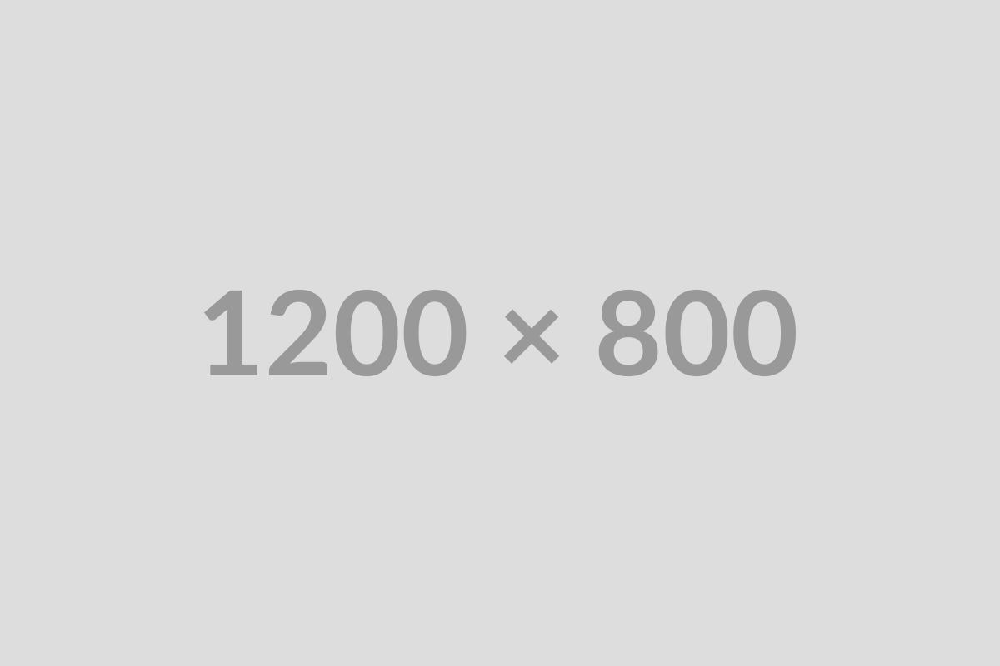
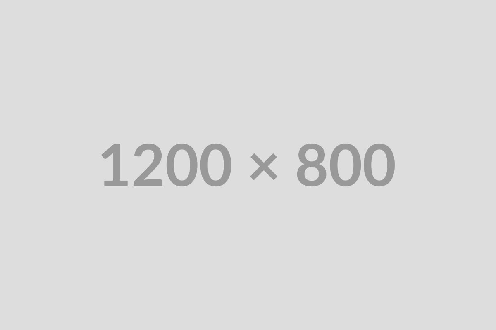
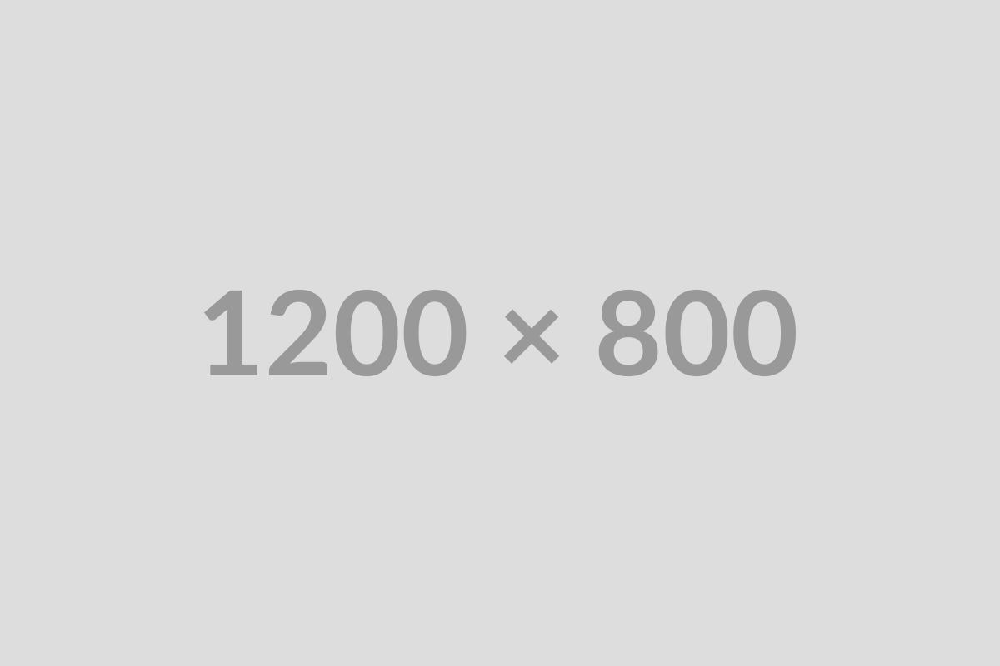

A
idan
G
uimond's Port
folio
Full Stack
Web Developer
Projects
About
Contact
Projects
Horiseon Social Solutions Website Refactor
Placeholder for second project

 Placeholder for second project

Placeholder for second project

Placeholder for second project

Placeholder for second project
